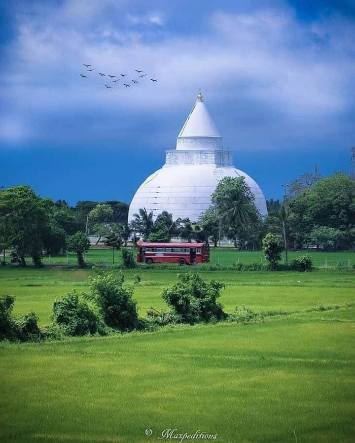
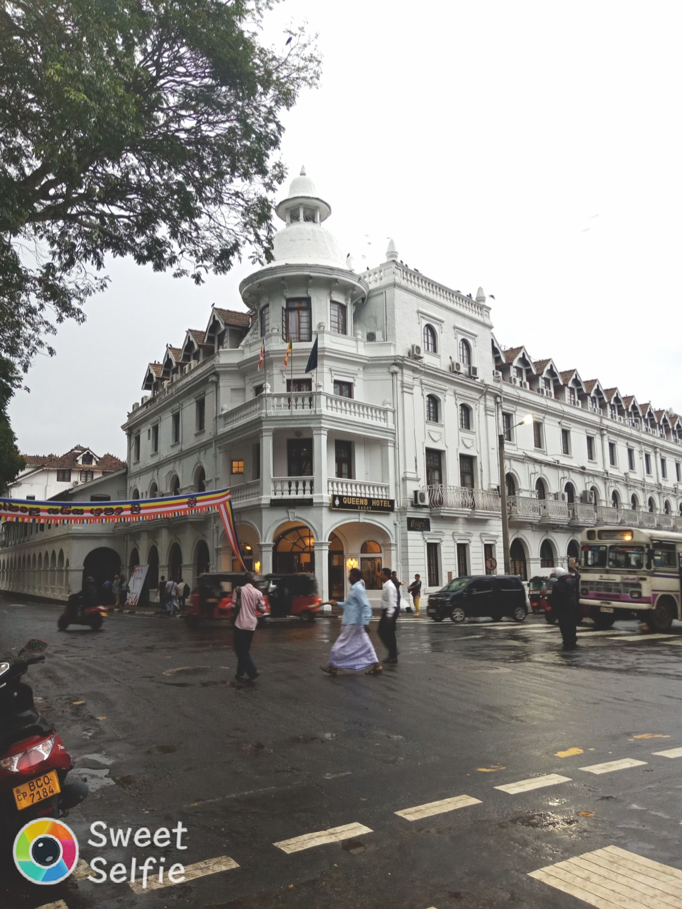

Yala National Park
WELCOME TO
SRI LANKA
Yalla National Park, located in the picturesque country of Sri Lanka, is a tropical paradise teeming with biodiversity and natural beauty. This small but enchanting park spans over 150 square kilometers and is renowned for its lush landscapes, dense forests, and vibrant wildlife. Yalla is particularly famous for being home to a large population of the majestic Sri Lankan elephant, as well as leopards, sloth bears, and a myriad of bird species. Its diverse ecosystems, which include wetlands, grasslands, and dense woodlands, make Yalla a haven for nature enthusiasts and wildlife photographers alike. Visitors to Yalla National Park are treated to an unforgettable experience, where they can embark on thrilling safaris to witness these incredible creatures in their natural habitat, all while surrounded by the breathtaking scenery that defines this unique gem of Sri Lanka.
Polannaruwa

WELCOME TO
SRI LANKA
Polonnaruwa, situated in the heart of Sri Lanka, is an ancient city steeped in history and architectural marvels. It served as the second capital of the country after the destruction of Anuradhapura and is now a UNESCO World Heritage Site. Polonnaruwa is renowned for its well-preserved ruins of temples, palaces, and statues that date back to the 12th century. Among its notable attractions are the Gal Vihara, a group of striking Buddha statues carved from a single rock, and the Royal Palace complex with its stunning architecture. Exploring Polonnaruwa offers a captivating journey through Sri Lanka's past, making it a must-visit destination for history enthusiasts and travelers seeking to immerse themselves in the country's rich cultural heritage.
Mirissa

WELCOME TO
SRI LANKA
Mirissa, a coastal gem in southern Sri Lanka, is a paradise for beach lovers and ocean enthusiasts. This tranquil village is famous for its pristine beaches, gentle waves, and vibrant marine life. Visitors flock to Mirissa for a relaxing getaway, where they can enjoy sun-kissed shores, partake in thrilling whale-watching excursions, and savor fresh seafood at charming beachside restaurants. With its laid-back atmosphere and breathtaking sunsets, Mirissa offers a slice of tropical paradise that's hard to forget.
Kandy

WELCOME TO
SRI LANKA
Kandy, nestled in the heart of Sri Lanka, is a captivating city steeped in culture, history, and natural beauty. This enchanting destination is renowned for its sacred Temple of the Tooth Relic, a UNESCO World Heritage Site, which houses a revered relic of Buddha. Beyond its religious significance, Kandy boasts picturesque landscapes, including the serene Kandy Lake and lush botanical gardens. Visitors can also explore the bustling streets, vibrant markets, and savor traditional Sri Lankan cuisine. With its rich heritage and scenic charm, Kandy is a must-visit city that provides a glimpse into the soul of Sri Lanka.
Sigiriya
WELCOME TO
SRI LANKA
Sigiriya, often referred to as the "Lion Rock," is a mesmerizing archaeological site and fortress in the heart of Sri Lanka. This UNESCO World Heritage Site is renowned for its dramatic setting, with a towering rock formation that rises abruptly from the surrounding lush jungle. The site features ancient frescoes, landscaped gardens, and the remnants of a palace built on top of the rock. One of its most iconic features is the enormous lion paw entrance, giving it the nickname "Lion Rock." Climbing to the summit rewards visitors with breathtaking panoramic views of the surrounding countryside. Sigiriya is a testament to ancient Sri Lankan engineering and artistry, making it a must-visit destination for history buffs and nature enthusiasts alike.
Ella
WELCOME TO
SRI LANKA
Ella, a picturesque town nestled in the hill country of Sri Lanka, is a charming destination celebrated for its natural beauty and serene ambiance. Surrounded by lush tea plantations and misty mountains, Ella offers breathtaking vistas, including the famous Ella Gap viewpoint that overlooks a stunning valley. Visitors can explore scenic hiking trails, visit cascading waterfalls like Ravana Falls, and enjoy the soothing rhythm of life in this tranquil town. Ella's relaxed atmosphere and cool climate make it a popular escape for travelers seeking solace and a closer connection with nature in the heart of Sri Lanka.
.jpeg)